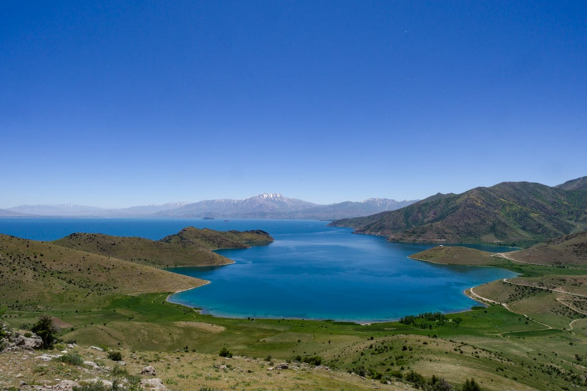

Van Şehri |
|
Gezi Rehberi
Van KalesiVan Kalesi, Urartu Krallığı’nın başkenti. Surlarla çevrilmiş olan kalede saray, tapınak, kaya mezaları, depolama alanları ve çivi yazılı steller bulunuyor. Urartular tarafından kurulmuş olan kale Persler ve Osmanlı Dönemi’nde de kullanılmaya devam edilmiş. Van merkezden minibüslerle ulaşabilecek mesafede (yaklaşık 5 km) Van Kalesi mutlaka görülmesi gerekenler listesinde bir önemli yer. Girişten basamaklarla 15-20 dakikada tırmanabileceğiniz tepenin üstüne inşa edilmiş kale, ince uzun bir krater tepesinin üzerine kurulmuş. Kaleden gün batımını izlemek paha biçilmez. Ayrıca tüm Van ve Van Gölü ayaklarınızın altında. Van GölüVan Gölü’nün bir yanında (kuzey batısında) Süphan Dağı, bir yanında Artos Dağı (güneyinde) bütün ihtişamları ile gölün bekçileri gibi başında bekliyorlar. Van şehir merkezinde göl kıyısına yürüyüş alanları yapılmış, karşı kıyıya Tatvan’a giden arabalı vapurlar da buradaki iskeleden kalkıyor. Akşam yürüyüşü yapmak için keyifli bir nokta Van Gölü kıyısı. Ayrıca Van merkezden Gevaş yönüne doğru devam ederseniz yol kıyısında meşhur Van kahvaltısını deneyebileceğiniz mekanlara ek olarak Edremit Bölgesi’nde bir dalış merkezi yer alıyor, gölde dalış yapmak farklı bir deneyim olabilir. |
Şehir Tarihçesi Yemekler Gezi Rehberi Ulaşım Duyurular Haberler İletişim |
| Bir Umut Furkan Berrak ürünüdür ©2021 | |